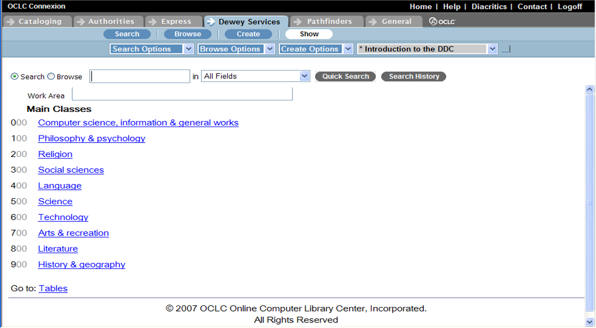
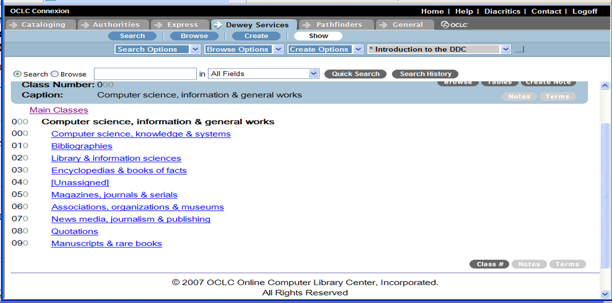
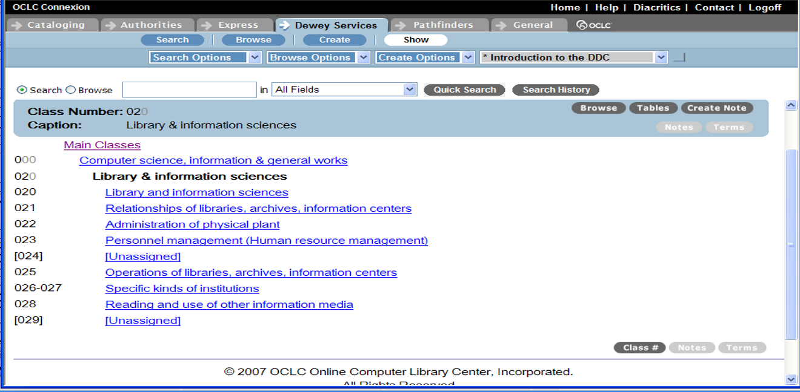
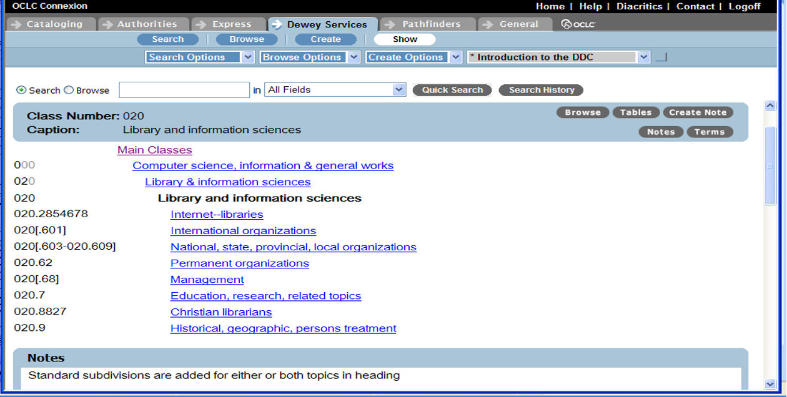
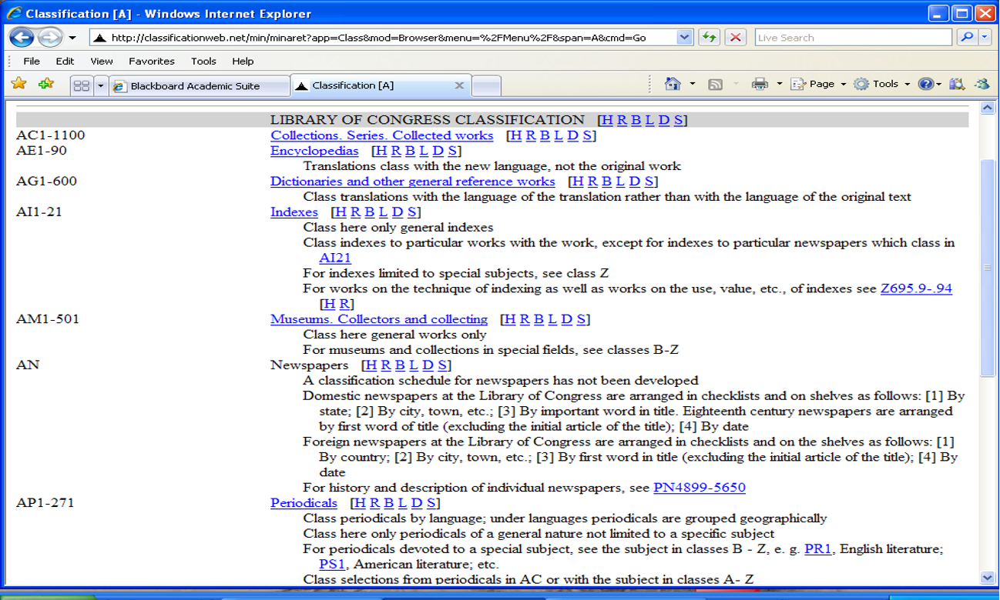
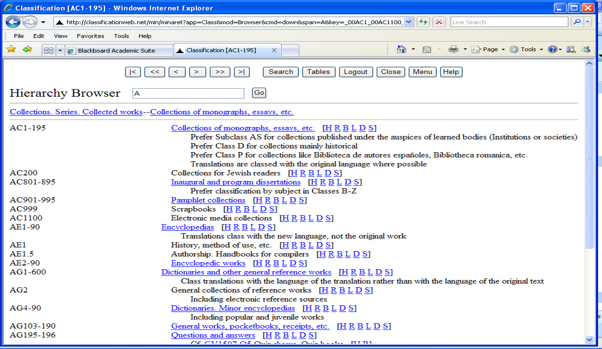
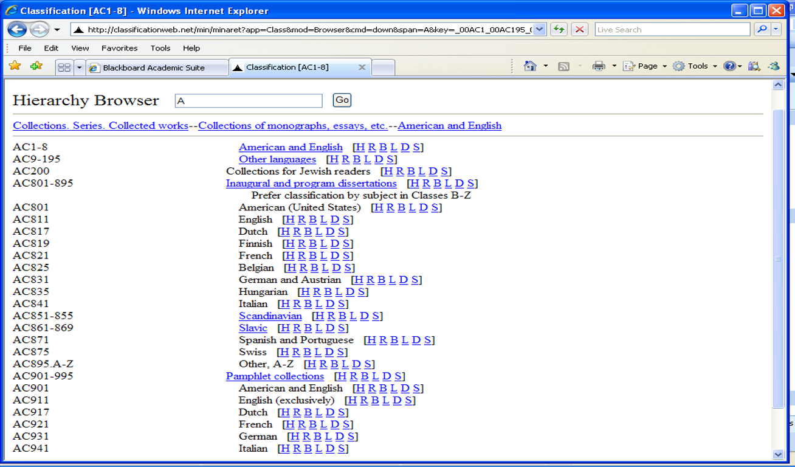

Module 8.2: Representation – Classification, Categories, Taxonomies, Ontologies
LIS 5043: Organization of Information
Introduction
Classification: Philosophical Roots
- “Classical Classification” is based on the Aristotelian idea of categories and class membership
- Is a binary relationship: you either belong to the class or you do not belong to the class
- Membership is based on similarity (having the same characteristics)
Classification: Philosophical Roots
- Prototype Theory (Wittgenstein and Rosch)
- Wittgenstein disputed the classical category theory around 1953 (gameness)
- Family resemblances
- Rosch and other cognitive psychologists further developed what is now called the “Prototype theory” of categories/categorization
- Categories based on human experience, imagination
- Wittgenstein disputed the classical category theory around 1953 (gameness)
Themes of Prototype Theory
Central themes related to prototype theory that might be important or related to structures for organizing knowledge includes:
family resemblances, or the idea that members of a category can be related to each other without possessing all of the same properties that define the categorycentrality, or the idea that some members of a category may be ‘better examples’ or exemplars of the category than othersgradience, or that some categories have degrees of membership or no clear boundaries for membershipbasic-level categorization, the idea that categories are not merely organized in a hierarchy from the most general to the most specific, but are also organized so that the categories are cognitively ‘basic’ are in the middle
Definitions
Category(ies)
a group of objects, concepts, etc. that are related in some manner; by similarity, sharing some attribute or characteristic
Classification
arrangement of entities or concepts in logical order according to their similarities
Taxonomy(ies)
sets of categories with hierarchical and other semantic relationships between categories shown; support classification
Ontology(ies)
a formal, explicit representation of a domain’s knowledge; a map of the knowledge of a domain or specialization, containing terminologies as well as semantic relationships
Definitions
Classifying
- Arranging collection according to classification system
- Assigning notation or class number to each item
Class
group of entities or concepts possessing common attributes or characteristics
Facet
component of a complex subject based on a particular characteristic, e.g., geographic facet, language facet, literary form facet
Scheme
formal system for arrangement of entities according to subject or form
Definitions
Schedule
published description of classification scheme showing overall structure and relationships among subjects or concepts
Index
- alphabetical list of subject terms and concepts with locations in scheme
- cross-references for subjects scattered by scheme
Notation
- symbols representing classes and subclasses in scheme
- applied as a mark on an item identifying item with its class
Notation characters
Pure: Only numerals or only letters
Mixed: Letters plus numerals; alphanumeric
Unique Identification
Document classification codes are control devices that serve several purposes…
- Uniquely identify physical items in collection
- Link physical items with records describing them
- Facilitate intellectual access
- Facilitate physical access
- Facilitate inventory control
Unique Identification
Examples
Notation: Describes item; reflects classificationCall number: Notation + unique book numberAccession number: Unique identification by order acquired; arbitrary
Major Approaches
Enumerative
subjects and their relationships are prearranged in classes and subclasses
Faceted
Potential facets for subject classes are predetermined, but classes and subclasses are not prearranged
Enumerative Approaches
Subjects and their relationships are prearranged in hierarchical classes and subclasses
Classification consists of identifying location of each item in scheme.
Notation for each class is predetermined.
Dewey Decimal Classification (DDC)
Dewey Decimal Classification (DDC)
DDC: Ten Main Classes
DDC: Ten Divisions within 000
DDC: Ten Sections within 000 Division
DDC: Subsections within 020
Library of Congress Classification (LCC)
Library of Congress Classification (LCC)
LCC Example: AC Class
LCC Example: Class AC
LCC Example: Class AC
Faceted Approaches
Faceted Classification
Potential facets for subject classes are predetermined, but classes and subclasses are not prearranged
Classification consists of identifying each facet applicable to an item
Notation is synthesized by drawing together notation from different facets
Faceted Approaches
Faceted Approaches: Exercise
Colon Classification
Colon Classification
PMEST
- Personality (primary characteristics, “essence”) -Matter (physical characteristics)
- Energy (operations, problems, processes)
- Space (geographical, topological)
- Time (date, period)
Index - Included in single volume
Notation - Mixed;Noted for use of punctuation (colon); Includes Roman and Greek characters
Colon Classification
Art and Architecture Thesaurus
AAT provides controlled vocabulary for the visual arts and functions as a classification scheme
History – Created by many people through Getty program
Current use – by archivists, slide/photo librarians, museum curators, indexing services, architecture/design firms, art dictionaries and encyclopedias
For:
Physical description of museum objects, slides, photos, archival materials, etc.
Subject cataloging and keyword indexing of books, images, periodical literature
Database searching by scholars, researchers, students, practitioners, librarians
Schedule: available online
Index: Thesaurus in an index
Notation: Mixed;Each descriptor (controlled term) has unique notation code
AAT
Limitations to Classification
- Knowledge never remains static
- Physical placement distorts cross-relationships
- Systematic organization produces artificial symmetries
- Non-logical ordering is sometimes preferable
- Classifiers have psychological tendency to skew system
- No collection ever precisely reflects universe of knowledge
Careers related to Classification, Taxonomy, Ontology
- Cataloging and classification
- Ontologists
- Taxonomists
- Information Architect
- Semantic Web